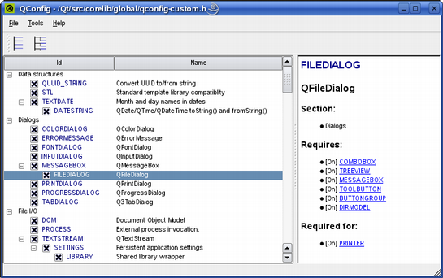

| Home · All Classes · Main Classes · Grouped Classes · Modules · Functions |
[Contents]
On the Qtopia Core platform the set of applications is often fixed, and reducing the size of Qt is important to save resources. It is possible to optimize the Qt installation by avoiding to compile the features that are not required, either by creating a custom configuration file that defines the preferred subset of Qt's functionality, or by using the configure script's feature option.
A custom configuration file uses macros to disable the various features, and can either be created manually or by using the qconfig tool located in the /tools/qconfig directory.

The qconfig tool's interface displays all of Qt's functionality, and allows the user to disable or enable the relevant features. The user can open and edit any custom configuration file located in the /src/corelib/global directory. When creating a custom configuration file manually, a description of the currently available Qt features can be found in the /src/corelib/global/qfeatures.txt file.
Note that some features depend on others; disabling any feature will automatically disable all features depending on it. The feature dependencies can be explored using the qconfig tool, but they are also described in the /src/corelib/global/qfeatures.h file.
To use the custom configuration when running configure, it must be saved in a file called qconfig-myfile.h in the /src/corelib/global directory. Use the -qconfig option and pass the configuration's filename without the qconfig- prefix and .h extension, as argument. For example:
configure -qconfig myfile
Qt provides several ready-made custom configuration files defining a minimal, small, medium and large installation, respectively, located in the /src/corelib/global directory.
To enable or disable a particular option, it might be easier to just run configure with the -no-feature-<feature> or -feature-<feature> option, respectively. For example:
configure -no-feature-thread
See also Performance Tuning.
[Contents]
| Copyright © 2006 Trolltech | Trademarks | Qt 4.2.1 |